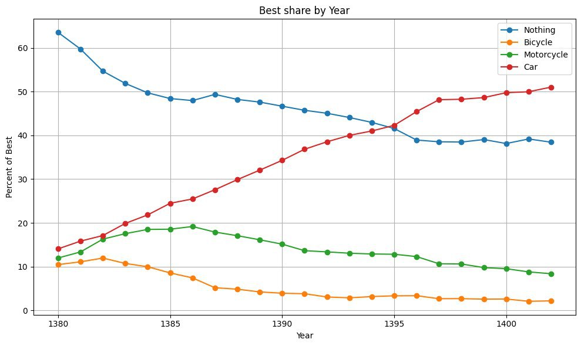
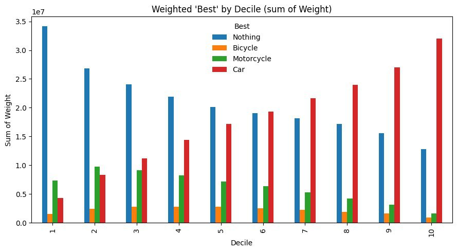
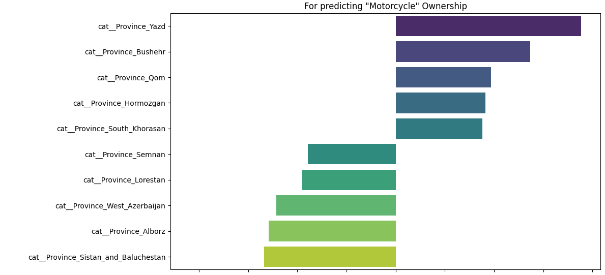
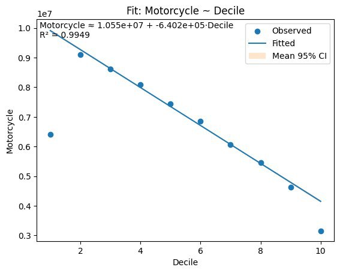

مجله تحلیلی ثانیه
دقیقتر از دقیقه
کسری عربی
محمدپارسا الهی منش
محمدباقر برکند
دقیقتر از دقیقه
مطالعهای جامع بر روی الگوهای مالکیت وسایل نقلیه خانوار در ایران با تأکید بر تحلیل تأثیر دهک درآمدی، محل سکونت (شهری/روستایی) و روندهای زمانی بر انتخاب وسیله نقلیه
یافتههای کلیدی و نتایج تحلیل
علیرغم رشد مداوم سطح رفاه، همچنان ۴۰ درصد خانوارهای ایرانی فاقد هرگونه وسیله نقلیه شخصی هستند.
مالکیت خودرو در تمام دهکها روند صعودی مشابهی داشته، با دقت پیشبینی بالای ۹۶٪ در مدلهای رگرسیون.
مالکیت دوچرخه در شهر با وضع مالی ارتباط قوی دارد، در حالی که در روستا این رابطه معنادار نیست.
موتور جایگاه ثابتی در سبد وسایل نقلیه خانوار دارد و عامل زمان در مدل آن ظاهر نمیشود.
بررسی اولیه توزیع وسایل نقلیه در خانوارهای ایرانی
قبل از بررسی متخصصانه هر وسیله، نگاهی به کلیات دادهها میاندازیم. این تحلیل بر اساس دادههای طرح نمونهگیری هزینه و درآمد خانوار مرکز آمار ایران و با تمرکز بر وسیله نقلیه ممتاز خانوار انجام شده است.

این نمودار سهم هر وسیله را به عنوان وسیله نقلیه ممتاز خانوار در سالهای مختلف نشان میدهد. اگرچه سطح رفاهی خانوار و میزان داشتن اتوموبیل میان خانوارها همواره افزایش داشته، ولی همچنان دیده میشود که ۴۰ درصد خانوارها هنوز از نداشتن حتی یک وسیله نقلیه رنج میبرند.

این نمودار نشان میدهد که هر وسیله، وسیله ممتاز چند خانوار از دهکهای مختلف است. مطابق با انتظار، روند کاهشی نداشتن وسیله نقلیه را میبینیم. همچنین سهم اتوموبیل با افزایش دهک بیشتر و بیشتر میشود.
این نمودار رشد میزان مالکیت خودرو در دهکهای مختلف را طی سالیان به تصویر میکشد. همانطور که دیده میشود، اگرچه مقادیر در دهکهای مختلف متفاوت است، ولی روند صعودی مشابهی دارند.
پیچیدهترین الگوی مالکیت وسیله نقلیه
شاید بتوان گفت که دوچرخه سختترین وسیله نقلیه برای پیشبینی و مدلسازی است! عوامل مختلف زیادی بر روی داشتن دوچرخه توسط یک خانوار تأثیر میگذارد. کودکان، افراد مسن، ورزشکاران، مستمندان و یا ثروتمندان همگی از دوچرخه استفاده میکنند.
با استفاده از دو پارامتر نزدیک هم دهک و مجذور دهک برای افراد شهری (و صفر برای روستاییان) با خطای ناچیز میتوانیم پیشبینی کنیم که چند خانوار از هر دهک و با وضعیت خاص شهری/روستایی دارای دوچرخه هستند.
سهم ثابت در سبد وسایل نقلیه خانوار
با توجه به نمودار موتور در سالیان اخیر که یک نمودار ثابت بود، این پرسش را در ذهن ایجاد میکند که به راستی کدام متغیرها تعیین کننده داشتن یا نداشتن موتور است.
مدلی که قادر است با دقت خوبی پیشبینی کند که چند خانوار در دهک و سال و وضعیت شهری روستایی بودن مشخص صاحب موتور است. از آنجا که در تابع پیشبینی کننده سال ظاهر نمیشود تایید کننده این است که موتور سهم ثابتی از وسایل نقلیه خانوار را دارد.

سیستان و بلوچستان به دلیل مسافتهای زیاد و همچنین وضع رفاهی نامناسب موتور ندارند. در کل فاکتور اینکه کدام استان مهم است خیلی پررنگ است.

میتوان وضعیت داشتن موتور را کمی کلیتر بررسی کرد. طبق مشاهدات خانوارها با دهک پایینتر از موتور بیشتر استفاده میکنند. توجه کنید که داده دهک ۱ و دهک ۱۰ به عنوان دادههای حدی کنار گذاشته شدهاند، میتوان چنین برداشت کرد که دهک نخست حتی قادر به خرید موتور هم در برخی از خانوارها نیست!
اصلیترین وسیله نقلیه شخصی
میدانیم ماشین اصلیترین وسیله نقلیه شخصی است. حال از جنبههای مختلف میخواهیم آن را بررسی کنیم. ابتدا به بررسی زمانی آن میپردازیم. با داشتن مدلی که تعداد خانوارهای صاحب ماشین در هر سال را پیشبینی کند میتوانیم سالهای پیشرو را نیز پیشبینی کنیم!
برای پیشبینی این تعداد از دو متغیر سال و ۱.۱ به توان سال بهره گرفتهایم. بخش نمایی به سبب رشد جمعیت و افزایش فناوری تولید گنجانده شده است و بخش خطی نیز اقبال بیشتر مردم و توانایی بیشتر خرید آنها را بازتاب میدهد.
برای پیشبینی تخصصیتر مدلی میسازیم که تعداد خانوارهای یک دهک خاص در یک سال به خصوص را پیشبینی کند. اگر تنها از دو متغیر دهک و سال استفاده کنیم و آن هم به صورت خطی یک مدل کارآمد خواهیم داشت که دقت بالایی دارد.
رویکرد علمی و ابزارهای تحلیلی
این تحلیل بر اساس دادههای طرح نمونهگیری هزینه و درآمد خانوار مرکز آمار ایران انجام شده است. این دادهها شامل اطلاعات جامعی از وسایل نقلیه خانوارهای ایرانی در دهکهای مختلف درآمدی و مناطق شهری و روستایی است. دادهها بر اساس مصاحبه مستقیم و بازدید از خانوارها جمعآوری شده و شامل اطلاعات دقیق مالکیت وسایل نقلیه است.
برای مدلسازی رفتار مالکیت هر وسیله نقلیه از روش رگرسیون خطی چندمتغیره استفاده شده است. متغیرهای مستقل شامل دهک درآمدی، وضعیت شهری/روستایی، سال، و ترکیباتی از این متغیرها (مانند دهک به توان دو و تعاملات) هستند.
این شاخص نشان میدهد که چه درصدی از تغییرات متغیر وابسته توسط مدل توضیح داده میشود. مقادیر نزدیک به ۱ نشاندهنده دقت بالای مدل است.
برای خودرو، ۳ سال آخر دادهها را از آموزش مدل حذف کرده و سپس دقت پیشبینی این سالها را بررسی کردیم تا قدرت تعمیمپذیری مدل را اندازهگیری کنیم.
برای اطمینان از صحت فرضیات رگرسیون، توزیع باقیماندهها و عدم وجود الگوی منظم در آنها بررسی شده است.